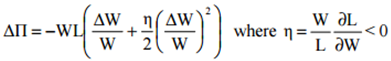

Minimum Wages and Firm Profitability
A Brief Summary of Draca et al
Created by Thomas Barks
Introduction
- Paper studies impact of minimum wages on firm profitability, specifically the UK NMW introduced in 1999
- Uses pre-policy information on the distribution of wages to conduct a DID analysis
- Finds that higher wages reduce profitability, especially in industries with higher market power
The paper goes some way in explaining why empirical evidence on the standard model of a competitive labour market is mixed
Figure 1. As illustrated, a wage floor reduces employment in a competitive labour market.
Motivation and Modelling Strategy
The following model is taken from Ashenfelter and Smith (1979). The introduction of the minimum wage (M) above the prevailing wage (W) reduces profits by:

This can be rewritten as:

The previous equations show that the lower the initial wage, the greater the fall in profits
The DID models are as follows:
where w=lnW
Data
- Paper uses FAME database: covers wider range of companies than standard
- Used the LFS for control variables
- Also used WERS to construct and validate treatment group indicators
Figure 2. The wage distribution
Conclusion
- Wages were significantly raised and firm profitability was significantly reduced due to the NMW
- Some evidence of bigger falls in profit margins for industries with higher market power
- Findings consistent with a simple no behavioural response model
- Robustness checks find significant results